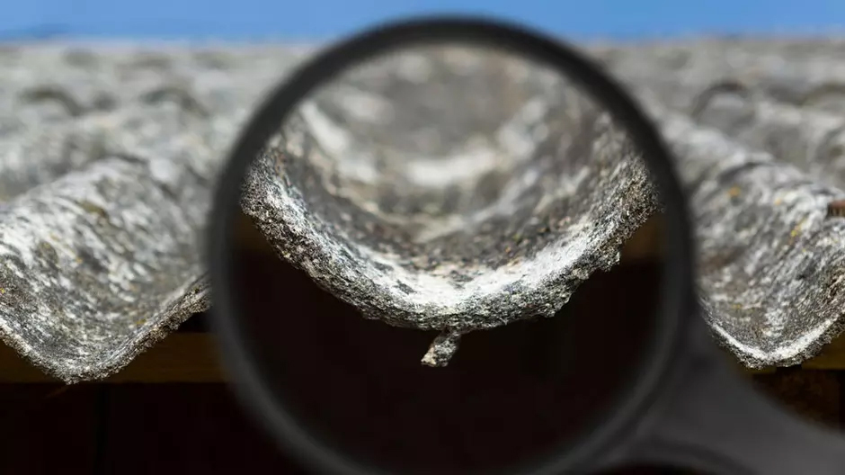

Азбестът е мека минерална скала. Добиван от мините в Зимбабве и Канада, този минерал намира приложение като изолатор на тръби и котли, облицовка на стоманени елементи, производство на спирачки, таванни покрития и панели, вентилационни системи, пожароустойчиви врати и стотици други продукти. Азбестът е съставен от милиони леки, неразрушими влакна, които го правят ценен, но опасен материал.
Съществуват три основни типа азбест, които намират приложение: хросидолит - син азбест, амозит - кафят азбест, хризолит - бял азбест.
Голяма част от азбеста се използва в сградите и корабите за изолация на тръби и котли (син, кафяв и бял азбест), пожароустойчиви панели (обикновено кафяв), азбестови циментни плочи (бял). Съществуват и много други азбестови продукти и процеси, като:
- изолация - върху различни съоръжения; противопожарни одеала, ръкавици, постелки; изолирбанд; изолационен картон.
- фрикционни материали - амбреажни дискове, облицовка на спирачни дискове, покрития за спирачки.
- укрепващи материали - азбестови циментови плочи, подови плочи, картон, покривна мушама, бои и спойки, уплътнители, разтворители и др.
ЗАЩО АЗБЕСТЪТ Е ОПАСЕН?
Малките, често невидими влакна, които правят азбеста толкова приложим са вредни за човешкото здраве, когато бъдат вдишвани. Най-честите заболявания, причинени от азбестов прах са:
- белодробни заболявания - удебеляване и разраняване на белите дробове;
- азбестозис - това е вид пневмокониоза, причинена от акумулиране на прах;
- сърдечни заболявания - има смъртни случаи на работници от инфекции;
- мезотелиома - това е рак на стомашното покритие или на белодробните кухини;
- рак на белите дробове - болестта, която убива повечето от работещите с азбест;
- други форми на рак - има доказателства, че азбестът причинява и рак на гърлото.